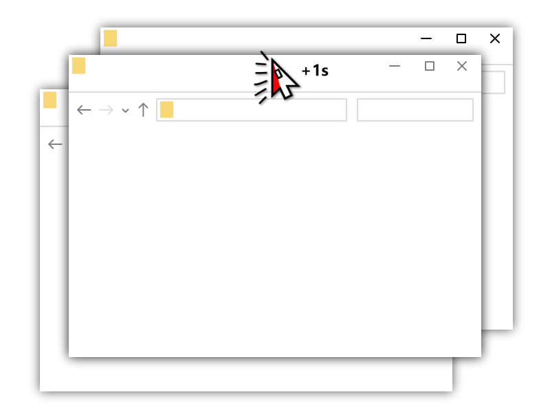
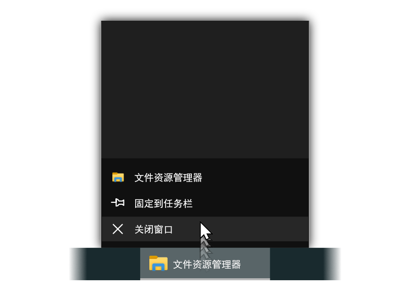

功能
置顶/取消置顶窗口：
左键长按 + 标题栏
在工作中我们有时会想让某个窗口置顶，比如微信、记事本、Word文档等，现在能1秒置顶了。


快捷关闭活动窗口：
双击 + Esc 键
快速关闭活动窗口？没问题。
快捷关闭窗口：
中键 + 标题栏
就像在网页浏览器中可以使用中键关闭页面一样，现在其他窗口也能使用中键关闭了。


快捷最小化窗口：
右键 + 标题栏
再也不用瞄准最小化按钮了。
移动鼠标至「关闭窗口」：
右键 + 任务栏按钮
更加方便。
